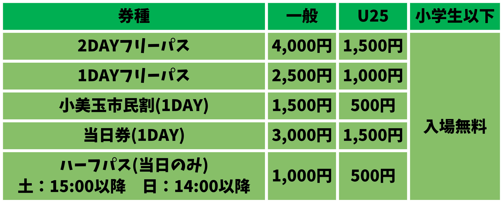

『クラッカー×クラッカー』

あらすじ
ある日、4人の宇宙人が四季の里へやってきた。どうやら仲間の宇宙人のサプライズ誕生日会の練習をしているみたいだ。 しかし予想外のハプニングが起こり雲行きは怪しくなる一方。 そこへ偶然居合わせた地球人の助けを借りて4人はサプライズを成功させることができるのか
日時
7月18日（土）15:10／18:40
7月19日（日）12:15／15:10
※上演時間は約20分
※5分前に会場L（芝生の丘・西ベンチエリア）へお越しください
※全団体のタイムスケジュールはこちらから
タイムテーブル - 四季の里演劇祭
会場
四季文化館みの～れ・四季の里
〒319-0132 茨城県小美玉市部室1069
※駐車場あり
※会場～最寄り駅（JR常磐線羽鳥駅）間でシャトルバス運行あり（乗車無料）。
時刻表はこちらから
シャトルバス時刻表 - 四季の里演劇祭

入場料

※フリーパスは開催期間中いつでも入退場自由
※小美玉市民割は小美玉市在住の方のみご購入いただけるフリーパス券です。入場の際は住所のわかるものを確認させていただきます。
※各団体の公演は投げ銭制
チケット
四季の里演劇祭2【四季の里演劇祭】 | 小美玉市四季文化館みの〜れ及び四季の里
●小美玉市四季文化館みの〜れ
電話にてご予約ができます。 電話番号：0299−48−4466
予約チケットは小美玉市内の下記施設にて支払・引取ができます。
・小美玉市四季文化館みの〜れ
・小美玉市小川文化センターアピオス
・小美玉市生涯学習センター（コスモス）
当日引取の際は総合受付にて予約名をお申し出ください。
※みの〜れ窓口でもご予約ができます。
☆ギフトチケット☆
あたらしく演劇を好きになるきっかけを。
「私は観に行けないけど…ぜひ私のぶんも楽しんでほしい！」
「演劇祭を体験したい方にプレゼントしたい！」
そういう思いの方に「ギフトチケット」をご購入いただくと、
ご希望の方がそのチケットで観劇できる、というシステムです。
詳しくは「応援ページ」をご覧ください。
ギフトしたい！（贈りたい）方
→ギフトチケット「ギフトしたい！」お申し込みはこちら
使いたい！（観劇したい）方
→ギフトチケット「使いたい！」お申し込みはこちら
キャスト
ウナスン 仲程俊介
チノタク 久野泰輝
ユラポン あららぎ ぽぽ
ウバケラ アオバーランド
キマスイ はまだだいすけ
スタッフ
演出 あららぎ ぽぽ
音響 仲程俊介・近藤銀河・田中勇輝
小道具 あららぎ ぽぽ
宣伝美術 あららぎ ぽぽ・仲程俊介
各種SNSも随時更新中！